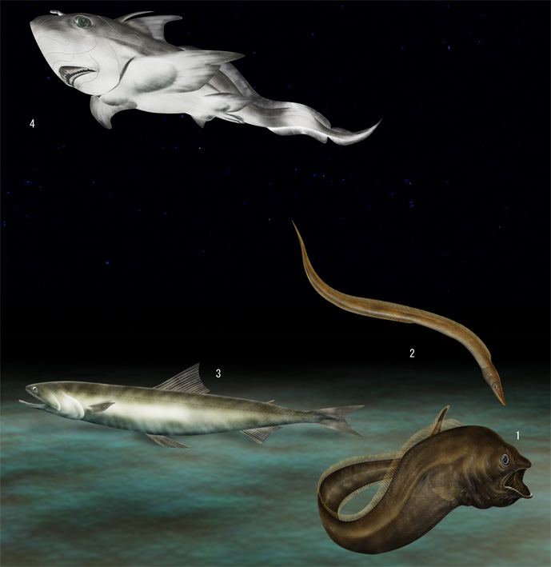

Peces bentónicos de la zona de transición 08 |
((RELLENAR CON INFORMACIÓN)) |
|  |
1. Pez roca de pico afilado Sebastes zacentrus 10-60cm 2. Pez roca de espina de rosa Sebastes helvomaculatus 20-40cm 3. Pez roca de harlequín Sebastes variegatus 30-40cm 4. Pez roca ojo amarillo Sebastes ruberrimus 40-70cm 5. Pez roca boca amarilla Sebastes reedi 15-30cm 6. Pez roca de raya roja Sebastes proriger 20-60cm 7. Pez roca azul Sebastes mystinus 40-60cm 8. Róbalo canario Sebastes pinniger 40-50cm 9. Pez roca de Bocaccio Sebastes paucispinis 30-90cm 10. Róbalo rojo Sebastes marinus 40-100cm |
|